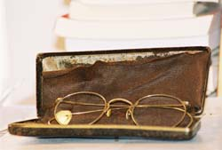
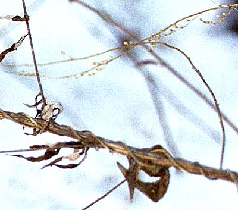
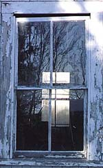

I know you've been pining to see them.

Saturday, February 28, 2004
Oedipal ? Electrical ? Both ? Neither ?
Here, dear readers, is visual proof that my father, the dear Raul Stanati, is as distinguished as Albert Einstein.


Thursday, February 26, 2004
Reminder
All living things are one seamless body
and pass quickly from dark to dark
(First Dedication)
The chaplain, our office manager said, was in the clinic. Did anyone want ashes ? I asked whether taking ashes was strictly Catholic, and, if so, was it, like communion, closed to Protestants. My colleagues were vague on the theology. One, chagrined, did not know that she was not allowed to share communion in a Catholic Church. I tried to explain the theology as I understood it: transubstantiation effected only by priests in lineage with the Pope. A Catholic colleague chimed in: but lay ministers give the Eucharist all the time ! Hmm. The discussion lapsed. There were no takers for the ashes.
One seamless body. These branches seem to tango. And seem a pieta. In any case, they remind me of the kind of "love" that "seamless body" implies.
For Lent I will attempt to give up 15 minutes a day of discursive thought.
Tuesday, February 24, 2004
Doctor Doctor
I was an intern when House of God came out. We didn't need a novel to tell us that being an intern sucked, and that ridiculous overwork sometimes desensitized us, but it was liberating to see that we were not alone in using black humor to get us through the night. Some of the book's phrases have fallen into a disreputable niche of the medical vernacular. An unfortunate one is GOMER, meaning a frail, elderly, often severely demented nursing home patient with multiple diseases all in various states of impending or actual decompensation. It's an acronym, and stands for "Get Out of My Emergency Room." It encapsulates the sense of frustration and futility that comes from having, time after time, to treat a patient whose quality of life can maybe be brought from miserable to terrible by treating yet another bout of CHF or aspiration pneumonia, only to have it recur a few days after discharge.
I got to thinking about "Get Out of My ER" this week after reading Spanky's Place, an ER nurse's blog. The writer is a nurse practitioner now, doing urgent care, but he obviously has worked in ERs for years. If Sam Shem offered us a tempered and deconstructed glimpse of the underbelly of health care providers' negative feelings in House of God, Spanky whips out the under-underbelly and proudly parades it with an almost contextless glee.
I'm trying to come up with the opposite of "Get Out of My ER" -- something like Humans Avoid That E R -- which works, but imperfectly. Because, in fact, it's only certain humans that need to avoid Nurse Spanky: female, obese, non-English speaking people of color on welfare.
It's possible -- even likely since he's apparantly still employed -- that Nurse Spanky maintains an impartial, non-abusive and professional demeanor at work. Nonetheless, the depth and breadth of his verbal animus is breathtaking. His comments bristle with sizist, sexist, racist, classist, and xenophobic phrases. Here are a few excerpts.
Is there some reason bipolar passive-aggressive corpulent women find the need to gravitate to the ER on Sunday nights? Are they so lonely they would rather come to the ER and get stabbed with sharp objects rather than stay home alone and run up their electric bill with their “back massager?"
You got that fat by yourself, why should I hurt my back and jeopardize my entire income and lifestyle because of your inability to control your appetite. One of the nurses I work with has a permanent back injury caused by an insensitive lard-assed pile of goo. This fat, lazy, shit encrusted pustule wanted to sit up in bed...
This particular (ambulance) call was for an enormous black mama, 500 plus pounds. Who had fallen between the bed and the wall, and was wedged so tightly they couldn’t budge her. Keep in mind this was at the back of a large projects building in a unit with no elevator.
Anyone who works EMS or ER knows when they hear a certain address, it’s going to be a bad call, and the ER is going to be overrun with toothless, tattooed, worthless consumers of oxygen.
The next three snippets are from his ER manifesto. The phrase "we hate you" recurs throughout his piece like a refrain.
1. Don't go, it's not really an emergency, and we hate you. No really, you think you have an emergency but it's really not. And seriously, we hate you. Just stay the home, or at the restaurant, movie, massage parlor, your lovers house, or even with your significant other, just anywhere but the ER. Have I told you we hate you yet?
2. What is the most frequent reason for dragging Jose, Keneesha, Bryttynii, Boneki, Kristyan, Christiaan, Twannekaa, FeMolly, Miiho, and Sterling to the ER? Earaches. Now follow along closely ya hear. EARACHES ARE NOT EMERGENCIES, EARACHES ARE NOT EMERGENCIES!!! ...
14. And for you fat middle aged psyche women with the psyche look (We know who you are). The best way for you to remain unimpressive to me, is to tell me you have fibromyalgia, mitral valve prolapse, and hypoglycemia. Ok, so one out of three diseases is real, the other are pure bullshit. Fuck-off, die, and get the out of my ER.
What is the value of putting extreme stuff like this "out there" ? Is it to somehow validate feeling this way ? Writing like this is way beyond satire. It is invective, screed.
As a woman who has had her share of body image and eating issues, I read his ugly, cruel, way over-the-top description of catheterizing an obese female patient with chagrin. It is the antithesis of the Buddhist concept of "right speech." It is harmful, hateful, aggressive speech. In House of God, empathic care actually triumphs. In the House of Spanky, it's not that clear.
But what's in the job description of health care provider IS crystal clear: compassion. And not selective compassion. I'm not just being cute or sentimental. Dale describes compassion better than I ever could as a cultivatable skill. A practice. It takes a simple maneuver, a little act of the imagination. A tiny leap out of the self. Imagine being very poor. Imagine, if you're white, being black. Imagine being obese and, on top of that, having to climb countless flights of stairs to your apartment in the projects. Imagine the humilation of falling and being unable to get up. Imagine being ill and smelling bad and seeing disgust on people's faces. Imagine being an obese woman needing to get a urinary catheter in the ER. Imagine being a poor single mother with kids. Imagine being a single mother whose child is screaming and tugging at its ear at two AM. Imagine trying to get care from providers who don't speak your language and who resnet you for not speaking theirs. Imagine being without health insurance or on welfare. Imagine having a a body that hurts everywhere all the time and disabling fatigue and a diagnosis that your health care provider believes, vociferously and scornfully, is not "real." Imagine (this one's for me) having severe, acute low back pain and no doctor and having to go to a walk-in clinic to see an unfamiliar provider and convince them you're not just scamming for drugs. Imagine, then, being the person hooked on oxys or vikes or percs, sick, having to scam for drugs. That can't be a picnic.
Take it beyond the clinic. We were just warming up, doing the Hanon exercises. Imagine being the father who killed his children and buried them along a forgotten highway then killed himself in his jail cell. Imagine that. You can take this exercise as far as you like.
I think the practice of compassion enables right speech.
I used to have what I'd jokingly call Dr X's two rules. Not unSpanky-like. The first rule was "no family in the exam room." It wasn't a rigid rule, but it was there. Dr X herself, being the loner that she is, would never think of bringing her mother or husband into the exam room with her for, say, a visit to the doctor for a cough or cold. Or ear wax.
I came to realize what an completely awful "rule" this was; that a patient's need for moral support superceded my own need not to have a relative chiming in from the exam room corner or otherwise scrutinizing my care of their loved one. Or my own prejudice that people should undergo a medical encounter stoically and alone like I do. So I abolished rule number one. Ashamed that I'd ever suggested it.
Rule number two -- no crying -- was never really enforceable. Or meant to be enforced. It simply was my way of expressing, with some black humor, my own discomfort with people's tears. I tell myself, self, if a patient can't cry at the doctor's, where can they cry ? It's true. Of course they can cry. My discomfort remains. I'm working on it. It's a problem. My problem. The imperative is not to make it the patient's problem.
This week, speaking of crying, I found myself in tears while reading the New England Journal's CPC. Every week the NEJM prints a "clinical pathological conference" in which someone presents the details of a difficult medical case, and an expert discusses the case and the differential diagnosis. It's an institution. They are often fascinating, and instructive, but this one was unexpectedly moving.
It wasn't so much the usual "come up with the diagnosis" exercise, for the diagnosis was clear: it was a woman with terrible burns. The presenter described the ER care and then the subsequent lengthy ICU care of a case of critical lung and dermal injury from fire. There were pictures of the acute burns, which went so deeply they charred her skull, and also of the areas when they'd healed; they included a picture of her, smiling frankly at the camera, wearing a beautiful wig. One eyebrow is pulled upward by scar tissue, but it's subtle. And, at the end of the conference, she comes out and addresses the doctors herself. She'd been in the Rhode Island night club fire, whose one year anniversary was this week, in which 100 people died and many sustained horrible, mutilating injury.
What moved me, I think, was how she, and patients, all of them, are our teachers. And how gracious and lovely this is. "Doctor" comes from the Latin root docere meaning to teach. But our patients are teachers, too. Not just during our training. Every encounter is instructive. Especially the ones that push our buttons. Listen to the patient. Listen to ourselves. Listen ! Audite ! The first word of St. Benedict's Rule.
Yes, I know that there's little spare time for the luxury of investigating interpersonal dynamics in an understaffed, busy ER. And, yes, I know that ERs are there for saving patients like the critical burn victim I described above, not for delivering routine, primary care. And, furthermore, I know that nursing is physically taxing and often dangerous -- I do some occ med for our hospital and see many nurses with back and neck injuries. Usually not from caring for particularly large patients, either.
Maybe Nurse Spanky is simply venting, and he's really a fine, empathic fellow. Maybe he keeps his distress inside: keeps it as his problem, and doesn't make it his patients'. But I could not let the curious venom in his ER vignettes go unanswered.
I got to thinking about "Get Out of My ER" this week after reading Spanky's Place, an ER nurse's blog. The writer is a nurse practitioner now, doing urgent care, but he obviously has worked in ERs for years. If Sam Shem offered us a tempered and deconstructed glimpse of the underbelly of health care providers' negative feelings in House of God, Spanky whips out the under-underbelly and proudly parades it with an almost contextless glee.
I'm trying to come up with the opposite of "Get Out of My ER" -- something like Humans Avoid That E R -- which works, but imperfectly. Because, in fact, it's only certain humans that need to avoid Nurse Spanky: female, obese, non-English speaking people of color on welfare.
It's possible -- even likely since he's apparantly still employed -- that Nurse Spanky maintains an impartial, non-abusive and professional demeanor at work. Nonetheless, the depth and breadth of his verbal animus is breathtaking. His comments bristle with sizist, sexist, racist, classist, and xenophobic phrases. Here are a few excerpts.
Is there some reason bipolar passive-aggressive corpulent women find the need to gravitate to the ER on Sunday nights? Are they so lonely they would rather come to the ER and get stabbed with sharp objects rather than stay home alone and run up their electric bill with their “back massager?"
You got that fat by yourself, why should I hurt my back and jeopardize my entire income and lifestyle because of your inability to control your appetite. One of the nurses I work with has a permanent back injury caused by an insensitive lard-assed pile of goo. This fat, lazy, shit encrusted pustule wanted to sit up in bed...
This particular (ambulance) call was for an enormous black mama, 500 plus pounds. Who had fallen between the bed and the wall, and was wedged so tightly they couldn’t budge her. Keep in mind this was at the back of a large projects building in a unit with no elevator.
Anyone who works EMS or ER knows when they hear a certain address, it’s going to be a bad call, and the ER is going to be overrun with toothless, tattooed, worthless consumers of oxygen.
The next three snippets are from his ER manifesto. The phrase "we hate you" recurs throughout his piece like a refrain.
1. Don't go, it's not really an emergency, and we hate you. No really, you think you have an emergency but it's really not. And seriously, we hate you. Just stay the home, or at the restaurant, movie, massage parlor, your lovers house, or even with your significant other, just anywhere but the ER. Have I told you we hate you yet?
2. What is the most frequent reason for dragging Jose, Keneesha, Bryttynii, Boneki, Kristyan, Christiaan, Twannekaa, FeMolly, Miiho, and Sterling to the ER? Earaches. Now follow along closely ya hear. EARACHES ARE NOT EMERGENCIES, EARACHES ARE NOT EMERGENCIES!!! ...
14. And for you fat middle aged psyche women with the psyche look (We know who you are). The best way for you to remain unimpressive to me, is to tell me you have fibromyalgia, mitral valve prolapse, and hypoglycemia. Ok, so one out of three diseases is real, the other are pure bullshit. Fuck-off, die, and get the out of my ER.
What is the value of putting extreme stuff like this "out there" ? Is it to somehow validate feeling this way ? Writing like this is way beyond satire. It is invective, screed.
As a woman who has had her share of body image and eating issues, I read his ugly, cruel, way over-the-top description of catheterizing an obese female patient with chagrin. It is the antithesis of the Buddhist concept of "right speech." It is harmful, hateful, aggressive speech. In House of God, empathic care actually triumphs. In the House of Spanky, it's not that clear.
But what's in the job description of health care provider IS crystal clear: compassion. And not selective compassion. I'm not just being cute or sentimental. Dale describes compassion better than I ever could as a cultivatable skill. A practice. It takes a simple maneuver, a little act of the imagination. A tiny leap out of the self. Imagine being very poor. Imagine, if you're white, being black. Imagine being obese and, on top of that, having to climb countless flights of stairs to your apartment in the projects. Imagine the humilation of falling and being unable to get up. Imagine being ill and smelling bad and seeing disgust on people's faces. Imagine being an obese woman needing to get a urinary catheter in the ER. Imagine being a poor single mother with kids. Imagine being a single mother whose child is screaming and tugging at its ear at two AM. Imagine trying to get care from providers who don't speak your language and who resnet you for not speaking theirs. Imagine being without health insurance or on welfare. Imagine having a a body that hurts everywhere all the time and disabling fatigue and a diagnosis that your health care provider believes, vociferously and scornfully, is not "real." Imagine (this one's for me) having severe, acute low back pain and no doctor and having to go to a walk-in clinic to see an unfamiliar provider and convince them you're not just scamming for drugs. Imagine, then, being the person hooked on oxys or vikes or percs, sick, having to scam for drugs. That can't be a picnic.
Take it beyond the clinic. We were just warming up, doing the Hanon exercises. Imagine being the father who killed his children and buried them along a forgotten highway then killed himself in his jail cell. Imagine that. You can take this exercise as far as you like.
I think the practice of compassion enables right speech.
I used to have what I'd jokingly call Dr X's two rules. Not unSpanky-like. The first rule was "no family in the exam room." It wasn't a rigid rule, but it was there. Dr X herself, being the loner that she is, would never think of bringing her mother or husband into the exam room with her for, say, a visit to the doctor for a cough or cold. Or ear wax.
I came to realize what an completely awful "rule" this was; that a patient's need for moral support superceded my own need not to have a relative chiming in from the exam room corner or otherwise scrutinizing my care of their loved one. Or my own prejudice that people should undergo a medical encounter stoically and alone like I do. So I abolished rule number one. Ashamed that I'd ever suggested it.
Rule number two -- no crying -- was never really enforceable. Or meant to be enforced. It simply was my way of expressing, with some black humor, my own discomfort with people's tears. I tell myself, self, if a patient can't cry at the doctor's, where can they cry ? It's true. Of course they can cry. My discomfort remains. I'm working on it. It's a problem. My problem. The imperative is not to make it the patient's problem.
This week, speaking of crying, I found myself in tears while reading the New England Journal's CPC. Every week the NEJM prints a "clinical pathological conference" in which someone presents the details of a difficult medical case, and an expert discusses the case and the differential diagnosis. It's an institution. They are often fascinating, and instructive, but this one was unexpectedly moving.
It wasn't so much the usual "come up with the diagnosis" exercise, for the diagnosis was clear: it was a woman with terrible burns. The presenter described the ER care and then the subsequent lengthy ICU care of a case of critical lung and dermal injury from fire. There were pictures of the acute burns, which went so deeply they charred her skull, and also of the areas when they'd healed; they included a picture of her, smiling frankly at the camera, wearing a beautiful wig. One eyebrow is pulled upward by scar tissue, but it's subtle. And, at the end of the conference, she comes out and addresses the doctors herself. She'd been in the Rhode Island night club fire, whose one year anniversary was this week, in which 100 people died and many sustained horrible, mutilating injury.
What moved me, I think, was how she, and patients, all of them, are our teachers. And how gracious and lovely this is. "Doctor" comes from the Latin root docere meaning to teach. But our patients are teachers, too. Not just during our training. Every encounter is instructive. Especially the ones that push our buttons. Listen to the patient. Listen to ourselves. Listen ! Audite ! The first word of St. Benedict's Rule.
Yes, I know that there's little spare time for the luxury of investigating interpersonal dynamics in an understaffed, busy ER. And, yes, I know that ERs are there for saving patients like the critical burn victim I described above, not for delivering routine, primary care. And, furthermore, I know that nursing is physically taxing and often dangerous -- I do some occ med for our hospital and see many nurses with back and neck injuries. Usually not from caring for particularly large patients, either.
Maybe Nurse Spanky is simply venting, and he's really a fine, empathic fellow. Maybe he keeps his distress inside: keeps it as his problem, and doesn't make it his patients'. But I could not let the curious venom in his ER vignettes go unanswered.
Sunday, February 22, 2004
Lunettes de Miel
Amilcare Carruga realized that perhaps the thrill of his new glasses had been the last of his life, and now it was over
-- Italo Calvino, "The Adventure Of A Nearsighted Man."
I love wearing glasses. I really do harbor an inner Elton John. I've worn them since seventh grade, for nearsightedness and slight astigmatism.Glasses and I had a brief falling out after the need for bifocals kicked in, but we have reconciled.
My first optometrist was a pleasant, ungainly man who talked very fast and mumbled so he was hard to understand. A friend of my parents, he had a narrow storefront dispensary in Lawrence, Massachusetts. I loved everything about going to his shop except his breath up close as he looked at my retina through the ophthalmoscope.
I especially liked trying on frames. Even then I loved glasses. Oddly enough, I've had plenty of pairs that I have not liked. In fact, I have yet to find the perfect pair. My first frames were a blue cats-eye number, ugly and wrong by any account. My second pair, for some reason, was a gray copy of the awful first. Then came some oval plastic horn rims, and a succession of coated wire-rimmed variants in tortoise shell, red and black. There was a gold rimmed pair, maybe even two, and a couple of ill-considered and owlishly huge plastic frames, one beige and the other a strange green-black.
I have my father, the dear Raul Stanati's, army issue world war two eyeglasses. They are delicate gold rims with cable ear pieces. Very, very beautiful. They are the UR-glasses in my optometric life. Iconic. A precious artifact. As are the horn rims Raul wore in the 50s and 60s along with his age-of-anxiety crewcut.
There is a distinct oedipal aspect to my eyeglass life. My mother had a pair of glamorous, pale horn rims that she kept in her drawer with her handkerchiefs and costume jewelry. They smelled like her: tobacco, perfume, ballpoint pens. She'd worn them in college, she explained. For typing. I never actually saw her wear those beautiful glasses. I want to wear glasses I thought, seeing them.
Wearing glasses was glamorously intellectual. One could cultivate so many sophisticated gestures with them, like sucking pensively on an earpiece, or pushing them up on top of one's head, or even pushing them absently up the bridge of one's nose. I simply had to have glasses. Nature cooperated: the blackboard blurred, and I was taken to the eye doctor.
My most nearly perfect glasses have been recent. I was heartbroken when an optometrist refused to replace the lenses in my ten year old round, reddish, light-brown horn rims with a new prescription, afraid that the plastic had become brittle and might break. He didn't want to be liable for that, he said. Luckily, I found a pair of coppery/bronze roundish wire rims that I like, and that have held up beautifully. I have a second pair of glasses -- plastic rims, a dark uniform ruddy brown, round but strangely flat on top, that are strangely severe. I feel like Cynthia Ozick in them. I wish I could say they make me think and write like her. Alas, they do not.
Nowadays, glasses have all become narrow, slit-like little jobs. I hate them. Narrow glasses look wrong on my big, squarish face. Plus, wearing them is like peering through keyholes.
I resent the little narrow glasses with an unreasonable resentment. They make people look like stock brokers. In MY day, we all wanted glasses that that made us look like Trotsky or John Lennon. Round glasses. I rest my case.
I tried to buy sunglasses last year with a Christmas gift certificate from the ever-thoughtful DK. I went to the local McEyeglass joint and, cheapskate that I am, bought a pair of little narrow sunglasses. Ugh ugh ugh. What a mistake. I hated them instantly. They made me feel ugly and dorky. I felt like small children were running from me in fear when I wore them.
Last September, on the day of my infamous auto wreck, I had been planning to bring the beautiful but brittle round hornrims to the glasses joint to get the lenses tinted. I'd set them aside on my desk for that purpose. I would do it later that day, after bringing the cat to the vet. Well, I certainly got sidetracked. Somehow, the accident seems linked to that plan to tint the beautiful old glasses.
The other day I realized that one can probably buy glasses on the internet. So I googled eyeglasses. And soon I was in glasses paradise. I found these and these and these and these and these -- the glasses of my dreams, lovely round frames in a world of sneeringly narrow ones. A small ember of glasseslust burns in my breast, kept in check for now by my inner skinflint. Who knows what will happen after my next eye exam, which I can schedule as early as next month according to the measured generosity of my HMO.
Until then, I am comforted to know that there are enclaves of round glasses in this narrow-eyed world.
Saturday, February 21, 2004
Bloat
Puff
Sex and turf. The secret motors throb.
Sacs and bladders plump and throats engorge
to lure with song, appall with inflatus.
The wolfish and the catty horripilate.
The coxcomb swells, the blossom’s pouting lips
enrouge and moisten for the honeybee.
So, blowfish, tetrodotoxic, float
deluded in dim, elemental blue.
Your folklore outfits fiendish bogeymen
with clever hooks and brilliant, flashing reels,
all soluble in venom (holy, pure,
devoid of ego sum) in the denouement.
But where are your comfort stories now, swellfish,
when your first awful, airful glimpse of self
is in a watery mirror falling fast
and your last thought is God, was I that fat ?
Self-puffery in monosyllabubbles !
Long knives await us all. (You too, Fugu.)
6.26.99
Body Language
Inhabiting the TV screen for his 15 notorious seconds, he looked quite ordinary -- a middle aged, crewcut man, dirty blond and of intermediate physique, casually dressed in sweatshirt and jeans. He was standing in a crowd, and shouting. This was, we were told, an anti-gay marriage rally in San Francisco. That explained his peculiar stance -- arms raised, palms upward -- as an attitude of ostentatious prayer. It also explained the icy blue hardness in his eyes, a piercing unblinking gaze readable instinctively, wordlessly, pre-cognitively as aggression and anger.
There had been another image, wierdly similar, a few weeks back. It was another anti-gay marriage rally, this one at Boston's State House. This time it was a woman. His counterpart, in fact: middle aged, clad in jeans and sweatshirt, neither fat nor thin, elaborately, blondly coiffed. She could easily have been his wife. She was sitting crosslegged on the parquet floor of the State House. Her arms, like his, were raised heavenward. Prayerful, palms up, splayed fingers heavily beringed and terminating in long, incurving, stigmata-red fingernails.
Invoking her deity. Inviting him down from an aerie somewhere vaguely above the Massachusetts State House's gold dome. Keen for his endorsement, his imprimatur. And certain that she has it. She's inspired by it, puffed up with divine afflatus, armed with scripture and faith. She is carried on a wave of something that feels transcendant, more than herself, sanctified. She tingles: Holy Spirit or hyperventilation ? Arms outstretched, she seems to plead to be overtaken: Leda summoning her Swan.
Under the banner of her particular version of Christianity -- a constitutionally illegitimate banner -- she would institutionalize her primitive prejudices, her fear and distaste, the feeling in her gut. She would make it legal scripture of the highest sort -- constitutional scripture.
Gut paired with God. A dangerous project.
Friday, February 20, 2004
Tying The Knot
What if every mayor followed Gavin Newsom 's brave example ?
Hit it, Louie --
Birds do it...
Bees do it...
Even leafless February trees do it ....
Let's fall in love !
Monday, February 16, 2004
Fifty Two
Fifty Two and I go a long way back, so far back that it seems a part of me. An appendage. Supernumerary digits. It's the year I was born. (That's 1952. AD.) Which means, mathwise, that last week's birthday makes me a fearfully symmetric Fifty Two.
Fifty was tough. I hadn't yet gotten over turning forty. Honest. But fifty. Ack. Even the word. Say it: fiffffffty. All those F's. Like something exhaling, deflating. Or dust, as in from dust to dust, sifffffting to the floor. For fifty one I concocted a spiffffy if psychotic bit of denial : Fifty ONE ! One ! What a TINY number ! I am in my EARLY fifties ! I swaggered about feeling young for about ten minutes. It worked about as well as Uncle Gordon's explanation of why one should find thunder reassuring: it means the lightning's already hit, and you're safe.
What about the next bolt, Gordon ?
So, thinking about age as I have been this week, I found myself constructing a chimeric woman out of metaphors of bodily decrepitude.
I began at the top with salt and pepper. Or should that be hoarfrost and snow ? Tough call. Moved down through crows'- feet, beak and turkey wattles. No birds were harmed in making this golem And bags. Lower down, dugs. In back, straight from the Sahara, a hump. Chicken legs. Paper skin. Fishscales.
Medicine is more euphemistic. Virtually ecclesiatic. Presbyopia. Presbyacusis. Presbyesophagus. Old eyes, old ears, old throat. Trinitarian and Calvinistic, indeed. And what about rebirth ? Or presbyeverything ?
Gerontologists have a category for the extremely aged. The old old. I've always been charmed by the unusual and honest anglosaxonicity of of that phase.
As usual, the language reflects gender power structure. Presbus: old man. Geri- and geron-: again, old men. Dementing, senile, we also occult an old man: senex. As in seigneur. Sir. Sire. Senator. Senior citizens.
Is there a female vocabulary of age ?
There's hag, of course. Evil spirit, repulsive old woman. From haegtes -- fury, witch. That's a good one. Creative, powerful. Dominant. Nothing "dotage" about hags.
Then there's crone. Withered old woman. From croonje -- old ewe, carcass. (Cf. carogne, carrion.) An economically useless animal, all bred out. Maggot food.
And dowager. Widow, entitled to her husband's estate. From dowry to dowager: the gender economics of marrige.
Who uses "anile" anymore, if anyone ever did ? "Like an old woman, feeble-minded," explains my decrepit Funk & Wagnall's.
What's in a (loaded) word ? The clinic abounds with more mundane examples. Is the 70 year old woman who springs fluidly from the exam table "spry" or simply "agile" ? And is "cute" really the best word to describe that 90 something, tweedy professor emeritus ? And is a woman "sweetie" or "Mary" or "dear" at 85, when at 45 she was "Mrs. Jones" ?
As we age we become Other. Strange, frightening Things. Mementos mori. Young people look through us, look away. Or stare in horror, thinking "Not me !"
"Don't get old," said a 87 year old woman to me Friday, smiling ruefully. "I'd rather get old than die young," I replied. Then paused. "Except I might be too old to die young."
I'm waiting for the next bolts, Gordon. And the last.
Saturday, February 14, 2004
Minutiae

Small shocks of color amidst the general gray and brown of the midwinter woods: red berries, the hard, iridescent green-blue of a mallard's head, the softer green of the pine boughs. Underfoot: mud and decaying leaves, plates of glaucous ice, burly, exposed roots. At the riverbank, shorn knotweed, hollow as bamboo. The eye seeks out the beautiful minutiae. The single ghostly leaf, the thin coils, the weed stalks, still sparsely knobbed with seeds. Their names don't matter anymore. Taxonomies fall away. There is just eye and weed, eye and branch, eye and stone, eye and leaf. Eye and color, movement, shape.The winter days lengthen, illuminate the dead woods. Merciless floodlight.
I am in the riverbank thicket peering at a slip of vine through my camera lens. On the bike path, a young woman passes, singing, walking a groomed white poodle on a leash. The dog's wearing a red bandana. The woman turns, looks at then through me, and keeps on singing: no shyness. A beautiful bird on display.
Later, unlocking my car, I am startled by my reflection in the dark glass of the window: hat pulled low, glasses, face. Low afternoon sunlight harsh in every furrow. Skin taut over cheekbones, loose and concave beneath, quivering slightly with breath. When did I become so old, so thin, so frail ?
Small shocks of color amidst the general gray and brown of the midwinter woods: red berries, the hard, iridescent green-blue of a mallard's head, the softer green of the pine boughs. Underfoot: mud and decaying leaves, plates of glaucous ice, burly, exposed roots. At the riverbank, shorn knotweed, hollow as bamboo. The eye seeks out the beautiful minutiae. The single ghostly leaf, the thin coils, the weed stalks, still sparsely knobbed with seeds. Their names don't matter anymore. Taxonomies fall away. There is just eye and weed, eye and branch, eye and stone, eye and leaf. Eye and color, movement, shape.The winter days lengthen, illuminate the dead woods. Merciless floodlight.
I am in the riverbank thicket peering at a slip of vine through my camera lens. On the bike path, a young woman passes, singing, walking a groomed white poodle on a leash. The dog's wearing a red bandana. The woman turns, looks at then through me, and keeps on singing: no shyness. A beautiful bird on display.
Later, unlocking my car, I am startled by my reflection in the dark glass of the window: hat pulled low, glasses, face. Low afternoon sunlight harsh in every furrow. Skin taut over cheekbones, loose and concave beneath, quivering slightly with breath. When did I become so old, so thin, so frail ?
Friday, February 13, 2004
Next To The Heart, The Spleen Is Probably The Most Literary Organ
Just ask Baudelaire.
I ventured into the local pharmacy to buy a Valentine's card for DK last night after work. I was overcome by spleen: ill temper, pique, low spirits, melancholia. It was fueled by the unnatural and fluorescent-bright onslaught of the color red, and a father yammering in an over-loud, impatient voice to a gaggle of unpleasant children. Who in turn were clamoring for stuff. My eyes and ears were bleeding.
All the way home, our local NPR station had been interrupting the news with its yearly loathsome Valentine's Day fund raiser. That's when they lard their usual chipper "give us cash" tirades with pitches for roses and chocolates, snippets of bad rock and roll tunes about love, and excerpts of dialogue culled from romantic comedies. It's like being force fed upscale treacle.
I would like to replace the Valentine heart with the Valentine spleen.
I confess that I find the word "spleen," (and, by extension, the organ) amusing in a Monty Pythonesque sort of way. This is probably an attitude unbecoming an internist. Nonetheless, here are my translations of and variations on Baudelaire's "Spleen" poems. (They appeared in JAMA a few years ago.)
Splenic Translations And Variations
(after Baudelaire)
LXXV. SPLEEN
January, pissed off at the whole city,
dumps an urn full of icy shadows
onto the pale residents of the local graveyard.
Death splatters far into the foggy outskirts.
My cat scours the cold tiles for a bed.
Her thin, mangy body shakes and shakes.
The soul of an old poet meanders in the gutters
with the sad voice of a shivering ghost.
A bell tolls in self-pity, as a hissing log
accompanies, in falsetto, the snot-nosed pendulum,
and, in a deck reeking of stale perfumes,
the poisonous legacy of a dropsical old hag,
the suave jack of hearts and the queen of spades,
gossip wickedly about their old love affairs.
I. SPLEEN
Mr Jones won’t rest till he can piss
thundering urnsfull, sans hesiter;
thinks no one has a prostate big as his.
He must call me twenty times a day.
Ms Kat’s still cold and tired. She must be Swiss.
Her thyroid’s fine. I wish she’d go away.
Old Mr Poet rambles. Likes to kiss.
Arrested once again ? What can I say.
Plus Mrs Bell feels sorry for herself.
She has a cold. She’s nasal as an elf.
I’m choking on her cheap Woolworth’s perfume.
Increase their diuretics. Seduce your nurse.
It’s only gonorrhea, could be worse.
Death flirts with Love in the packed waiting room.
LXXVI. SPLEEN
I have more memories than a thousand year old man.
A huge desk, drawers stuffed with balance sheets,
poems, love letters, subpoenas, romances,
and thick locks of hair rolled up in receipts,
hides fewer secrets than my sad skull.
It’s a pyramid, an immense cavern
that holds more dead than a common grave.
-- I am the cemetary even the moon hates
where, like remorse, long worms drag themselves along
and always attack my most dear dearly departed first.
I am an old boudoir full of threadbare roses.
Here lies a jumble of loud, outdated styles.
And piteous pastels and exsanguinated landscapes
inhale in solitude the fumes of uncorked flasks.
Nothing rivals the length of these limping days
when, under the heavy flakes of years,
boredom, fruit of a dismal indifference,
assumes the proportions of immortality.
-- From now on, life, you’re nothing but
granite menaced on all sides by frightful waves,
nodding off in the depths of a foggy Sahara;
an old sphinx ignored by a indifferent world,
left off the maps, and to whose ferocious hilarity
only the rays of a sinking sun are audience.
II. SPLEEN
Nothing shocks me. Nope. I’ve seen it all.
All humours, blood, bile, lymph and melanchol.
Every complaint from scurf to fallen womb,
lies pickled in my brain as in a tomb
between commodes and wooden legs and phlegm.
The almost-dead are plucking at my hem
as I pass among them on my morning rounds.
-- Others snooze inside the charnel grounds
of memory, that moonless helminths’ hill
strewn with all the latest useless pills.
I am a sickroom full of bloody noses.
The body seems to sigh, then decomposes.
A Norman Rockwell print sags on my wall:
young Johnnie huffing isopropanol.
What’s longer than a clinic afternoon ?
Patients blizzard through consulting rooms;
boredom, bastard son of apathy,
pins me, wriggling, to mortality.
-- Adieu, compassion ! I pronounce you dead,
a chunk of rock besieged by overfed
dyspepsiacs and ever-hungry ghosts.
I’m an old sawbones, despised by HMOs,
AMA-reject, whose midnight guffaws fall
flat, face down, in the empty clinic hall.
LXXVII. SPLEEN
I am like the king of a rainy country,
rich, but impotent, young and nevertheless ancient,
who, contemptuous of his brown-nosing tutors,
bores himself with his dogs and his other beasts.
Nothing amuses him, neither gamebird nor falcon,
not even the subjects dying beneath his balcony.
The poet laureate’s most grotesque ditty
doesn’t animate the features of this cruel invalid.
His fleur-de-lised bed has become his tomb,
and even the courtesans, to whom every prince is fair,
can no longer find lingerie exotic enough
to pull a leer from this young skeleton.
The wise man who fashioned him from gold
never could refine out all the impurities,
and not even an old-fashioned Roman blood bath, the sort
about which all potentates, in their dotage, reminisce,
could rewarm that dazed cadaver
in whom, instead of blood, the green water of Lethe flows.
III. SPLEEN
I’m like the god with features bright as gold
(well-paid, powerless, infantile and old)
who scorns his white-coat colleagues’ obsequies,
preferring to consort with poetries.
Nothing amuses him, not gout or flu,
not wards of patients requiring a Code Blue.
The wildest case report, replete with gore
and exotic bacteria: quelle bore.
His diploma’ed office has become a tomb.
Cartoon nurses couldn’t pierce his gloom
with white starched bosoms, adulating sighs,
and nylon skirts ascending sleek, white thighs.
Mentors plucked him squalling from pre-med.
He should have stuck with English Lit instead.
No brilliant diagnosis or great case
can animate his masked and stony face --
Leptospirosis cannot wake the dead.
(He quaffs from River Lethe, takes to bed.)
LXXVIII. SPLEEN
When the cast iron sky weighs like a lid
on a mind in the thrall of boredom,
and when, from the whole surrounding horizon,
a black day lifts, sadder than any night;
when the world has become a damp dungeon
in which hope, like a bat, flits to and fro
brushing the walls with its timid wings
and knocking its head on rotten ceilings;
when the rain, splaying its long trails,
imitates the bars of a vast prison,
and a silent populace of squalid spiders
comes to root its filaments deep into our brain,
the clocks leap with a sudden fury
and launch a frightening clamor skyward,
wandering, exiled spirits
apply themselves afresh to their relentless whining
-- and long hearses, to neither drumbeat nor dirge,
file slowly through me: Hope,
vanquished, weeps, and atrocious anguish, that despot,
hangs its black drape over my bent neck.
IV. SPLEEN
Ennui is small and has a child-proof lid.
Its skull collapses on each new-born thought.
Its belt’s cinched far beyond the tightest fit.
Its life’s in acronymn on microdot.
Its world’s a hospital, all curtains drawn.
They barely flutter with departing breath.
Its ceilings spatter red when Doctor John
nicks the carotid. Oops. That’s one for Death.
Ennui is where a million IV lines
surround you like a clutch of prison bars,
and EEG wires’ spidery designs
burn into your brain. You’re seeing stars ?
But, listen -- a whole wardfull of afflicted
has risen up and seized the doctors’ lounge.
Summon Psych ! They have to be evicted !
A blast of Thorazine will knock them down !
That’s better. Now secure the coffin lids.
I mean tuck them in. Tee hee. A slip.
And when we’ve pinned them down on our fine grids,
we’ll twirl our black, silk scarves, and then we’ll nip.
I ventured into the local pharmacy to buy a Valentine's card for DK last night after work. I was overcome by spleen: ill temper, pique, low spirits, melancholia. It was fueled by the unnatural and fluorescent-bright onslaught of the color red, and a father yammering in an over-loud, impatient voice to a gaggle of unpleasant children. Who in turn were clamoring for stuff. My eyes and ears were bleeding.
All the way home, our local NPR station had been interrupting the news with its yearly loathsome Valentine's Day fund raiser. That's when they lard their usual chipper "give us cash" tirades with pitches for roses and chocolates, snippets of bad rock and roll tunes about love, and excerpts of dialogue culled from romantic comedies. It's like being force fed upscale treacle.
I would like to replace the Valentine heart with the Valentine spleen.
I confess that I find the word "spleen," (and, by extension, the organ) amusing in a Monty Pythonesque sort of way. This is probably an attitude unbecoming an internist. Nonetheless, here are my translations of and variations on Baudelaire's "Spleen" poems. (They appeared in JAMA a few years ago.)
Splenic Translations And Variations
(after Baudelaire)
LXXV. SPLEEN
January, pissed off at the whole city,
dumps an urn full of icy shadows
onto the pale residents of the local graveyard.
Death splatters far into the foggy outskirts.
My cat scours the cold tiles for a bed.
Her thin, mangy body shakes and shakes.
The soul of an old poet meanders in the gutters
with the sad voice of a shivering ghost.
A bell tolls in self-pity, as a hissing log
accompanies, in falsetto, the snot-nosed pendulum,
and, in a deck reeking of stale perfumes,
the poisonous legacy of a dropsical old hag,
the suave jack of hearts and the queen of spades,
gossip wickedly about their old love affairs.
I. SPLEEN
Mr Jones won’t rest till he can piss
thundering urnsfull, sans hesiter;
thinks no one has a prostate big as his.
He must call me twenty times a day.
Ms Kat’s still cold and tired. She must be Swiss.
Her thyroid’s fine. I wish she’d go away.
Old Mr Poet rambles. Likes to kiss.
Arrested once again ? What can I say.
Plus Mrs Bell feels sorry for herself.
She has a cold. She’s nasal as an elf.
I’m choking on her cheap Woolworth’s perfume.
Increase their diuretics. Seduce your nurse.
It’s only gonorrhea, could be worse.
Death flirts with Love in the packed waiting room.
LXXVI. SPLEEN
I have more memories than a thousand year old man.
A huge desk, drawers stuffed with balance sheets,
poems, love letters, subpoenas, romances,
and thick locks of hair rolled up in receipts,
hides fewer secrets than my sad skull.
It’s a pyramid, an immense cavern
that holds more dead than a common grave.
-- I am the cemetary even the moon hates
where, like remorse, long worms drag themselves along
and always attack my most dear dearly departed first.
I am an old boudoir full of threadbare roses.
Here lies a jumble of loud, outdated styles.
And piteous pastels and exsanguinated landscapes
inhale in solitude the fumes of uncorked flasks.
Nothing rivals the length of these limping days
when, under the heavy flakes of years,
boredom, fruit of a dismal indifference,
assumes the proportions of immortality.
-- From now on, life, you’re nothing but
granite menaced on all sides by frightful waves,
nodding off in the depths of a foggy Sahara;
an old sphinx ignored by a indifferent world,
left off the maps, and to whose ferocious hilarity
only the rays of a sinking sun are audience.
II. SPLEEN
Nothing shocks me. Nope. I’ve seen it all.
All humours, blood, bile, lymph and melanchol.
Every complaint from scurf to fallen womb,
lies pickled in my brain as in a tomb
between commodes and wooden legs and phlegm.
The almost-dead are plucking at my hem
as I pass among them on my morning rounds.
-- Others snooze inside the charnel grounds
of memory, that moonless helminths’ hill
strewn with all the latest useless pills.
I am a sickroom full of bloody noses.
The body seems to sigh, then decomposes.
A Norman Rockwell print sags on my wall:
young Johnnie huffing isopropanol.
What’s longer than a clinic afternoon ?
Patients blizzard through consulting rooms;
boredom, bastard son of apathy,
pins me, wriggling, to mortality.
-- Adieu, compassion ! I pronounce you dead,
a chunk of rock besieged by overfed
dyspepsiacs and ever-hungry ghosts.
I’m an old sawbones, despised by HMOs,
AMA-reject, whose midnight guffaws fall
flat, face down, in the empty clinic hall.
LXXVII. SPLEEN
I am like the king of a rainy country,
rich, but impotent, young and nevertheless ancient,
who, contemptuous of his brown-nosing tutors,
bores himself with his dogs and his other beasts.
Nothing amuses him, neither gamebird nor falcon,
not even the subjects dying beneath his balcony.
The poet laureate’s most grotesque ditty
doesn’t animate the features of this cruel invalid.
His fleur-de-lised bed has become his tomb,
and even the courtesans, to whom every prince is fair,
can no longer find lingerie exotic enough
to pull a leer from this young skeleton.
The wise man who fashioned him from gold
never could refine out all the impurities,
and not even an old-fashioned Roman blood bath, the sort
about which all potentates, in their dotage, reminisce,
could rewarm that dazed cadaver
in whom, instead of blood, the green water of Lethe flows.
III. SPLEEN
I’m like the god with features bright as gold
(well-paid, powerless, infantile and old)
who scorns his white-coat colleagues’ obsequies,
preferring to consort with poetries.
Nothing amuses him, not gout or flu,
not wards of patients requiring a Code Blue.
The wildest case report, replete with gore
and exotic bacteria: quelle bore.
His diploma’ed office has become a tomb.
Cartoon nurses couldn’t pierce his gloom
with white starched bosoms, adulating sighs,
and nylon skirts ascending sleek, white thighs.
Mentors plucked him squalling from pre-med.
He should have stuck with English Lit instead.
No brilliant diagnosis or great case
can animate his masked and stony face --
Leptospirosis cannot wake the dead.
(He quaffs from River Lethe, takes to bed.)
LXXVIII. SPLEEN
When the cast iron sky weighs like a lid
on a mind in the thrall of boredom,
and when, from the whole surrounding horizon,
a black day lifts, sadder than any night;
when the world has become a damp dungeon
in which hope, like a bat, flits to and fro
brushing the walls with its timid wings
and knocking its head on rotten ceilings;
when the rain, splaying its long trails,
imitates the bars of a vast prison,
and a silent populace of squalid spiders
comes to root its filaments deep into our brain,
the clocks leap with a sudden fury
and launch a frightening clamor skyward,
wandering, exiled spirits
apply themselves afresh to their relentless whining
-- and long hearses, to neither drumbeat nor dirge,
file slowly through me: Hope,
vanquished, weeps, and atrocious anguish, that despot,
hangs its black drape over my bent neck.
IV. SPLEEN
Ennui is small and has a child-proof lid.
Its skull collapses on each new-born thought.
Its belt’s cinched far beyond the tightest fit.
Its life’s in acronymn on microdot.
Its world’s a hospital, all curtains drawn.
They barely flutter with departing breath.
Its ceilings spatter red when Doctor John
nicks the carotid. Oops. That’s one for Death.
Ennui is where a million IV lines
surround you like a clutch of prison bars,
and EEG wires’ spidery designs
burn into your brain. You’re seeing stars ?
But, listen -- a whole wardfull of afflicted
has risen up and seized the doctors’ lounge.
Summon Psych ! They have to be evicted !
A blast of Thorazine will knock them down !
That’s better. Now secure the coffin lids.
I mean tuck them in. Tee hee. A slip.
And when we’ve pinned them down on our fine grids,
we’ll twirl our black, silk scarves, and then we’ll nip.
Wednesday, February 11, 2004
As Usual, Derrick Jackson Nails It
Boston.com / News / Boston Globe / Opinion / Op-ed / Bible lessons these clergy forgot
Today is the constitutional convention that takes up an amendment that would enshrine in Massachusetts' constitution a clause that prohibits a class of people from having a civil right enjoyed by the majority. A clause that mandates discrimination. I find it disheartening and shameful. The increasingly byzantine and hysterical contortions of Representative Travis, Speaker Finneran, Governor Romney, Archbishop O'Malley, Loathsome Activist Ron Crews and their neo-Phelpsian ilk have been painful to watch. Needless to say, Dubya, increasingly scrutinized for his mendacious, wrongheaded and thanatocentric policies, has come out in favor of a federal constitutional amendment defining marriage. It's easier to pander to the fundamentalist base than to defend his morally bankrupt and toxic policies.
Ideas for amending the Massachusetts amendment, or proposing legislation clearly contrary to the court's mandate are flying thick and fast. One can only hope that a majority of our legislators are people who value fairness and justice.
My senator, Susan Fargo, according to her office, opposes the amendment. My representative, Peter Koutoujian, also plans to vote against it, although the person to whom I spoke seemed less willing to state this uncategorically.
One of the media images that bothered me most recently was a photo of a demonstration, Church-sponsored, in which a child -- looked like a 12 or 13 year old girl -- was waving a sign that said "Adam and Eve Not Adam And Steve," a phrase straight from the neanderthal playbook of homophobic hate rhetoric. I cannot imagine a child coming up with such bile. I was reminded of Topeka's infamous and demonic Reverand Fred Phelps whose awful, hate-mongering demonstrations usually include a gaggle of his children and grandchildren, all bearing signs with text so obscene and awful I will not repeat it here.
In the progressive future I like to imagine, history books will list Travis, Finneran, O'Malley, Romney, Crews and their neo-Phelpsian followers as comprising a doomed last bastion of reactionary and malignant bigotry.
But do read the Jackson piece.
Today is the constitutional convention that takes up an amendment that would enshrine in Massachusetts' constitution a clause that prohibits a class of people from having a civil right enjoyed by the majority. A clause that mandates discrimination. I find it disheartening and shameful. The increasingly byzantine and hysterical contortions of Representative Travis, Speaker Finneran, Governor Romney, Archbishop O'Malley, Loathsome Activist Ron Crews and their neo-Phelpsian ilk have been painful to watch. Needless to say, Dubya, increasingly scrutinized for his mendacious, wrongheaded and thanatocentric policies, has come out in favor of a federal constitutional amendment defining marriage. It's easier to pander to the fundamentalist base than to defend his morally bankrupt and toxic policies.
Ideas for amending the Massachusetts amendment, or proposing legislation clearly contrary to the court's mandate are flying thick and fast. One can only hope that a majority of our legislators are people who value fairness and justice.
My senator, Susan Fargo, according to her office, opposes the amendment. My representative, Peter Koutoujian, also plans to vote against it, although the person to whom I spoke seemed less willing to state this uncategorically.
One of the media images that bothered me most recently was a photo of a demonstration, Church-sponsored, in which a child -- looked like a 12 or 13 year old girl -- was waving a sign that said "Adam and Eve Not Adam And Steve," a phrase straight from the neanderthal playbook of homophobic hate rhetoric. I cannot imagine a child coming up with such bile. I was reminded of Topeka's infamous and demonic Reverand Fred Phelps whose awful, hate-mongering demonstrations usually include a gaggle of his children and grandchildren, all bearing signs with text so obscene and awful I will not repeat it here.
In the progressive future I like to imagine, history books will list Travis, Finneran, O'Malley, Romney, Crews and their neo-Phelpsian followers as comprising a doomed last bastion of reactionary and malignant bigotry.
But do read the Jackson piece.
Tuesday, February 10, 2004
Psychopoeisis

Bartleby, Dearest
what the world needs now is love sweet love
i. First, Some Didactics
Weeping after orgasm is a classic symptom
of Masochistic Personality Disorder (DSM-III).
In the 1980’s this condition was renamed
Self-Defeating Personality Disorder,
and was relegated to the appendix of DSM-IIIR,
out of concern for its potential forensic misapplication,
in situations of alleged spousal abuse.
(It should go without saying, gentlemen,
that these masochistic and self-defeating diatheses
are predominantly female afflictions.)
Neither diagnosis appears in DSM-IV, but we are confident
that our ongoing statistically rigorous nosological researches
will clinch their syndromic validity
and earn them back their rightful niche in DSM-V,
in Cluster C on Axis II somewhere between
301.6 (Dependant) and 301.82 (Avoidant).
That being said, Masochistic Personality Disorder
must be distinguished from Masochism itself (302.83)
which, along with necrophilia, zoophilia,
klismaphilia, urophilia, coprophilia,
frotteurism, exhibitionism, fetishism and the like
remains, I am pleased to report, a bona fide Paraphilia,
that is to say, a perversion. In these disorders,
which only rarely afflict females,
a meticulous diagnostic evaluation must include
a transducer (either a thin metal ring
or a mercury-in-rubber strain gauge)
placed around the penis ,
exposure of the patient to various audiovisual stimuli
depicting paraphilic and appropriate sexual scenes,
and measurement of the comparative degree of penile erection
elicited by each. Castration ? Stereotaxic neurosurgery ?
Well, because of certain legal and ethical concerns
inevitably and predictably raised
by the irreversible destruction of gonadal and/or brain tissue,
and by the paucity of statistically demonstrable benefit
of these procedures, their use at present
has, unfortunately, been somewhat limited.
ii. The Case Report
I was caught
weeping after orgasm
to a degree unjustified
by the usual post-coital tristesse.
They say I am beside myself,
and beyond help. I ask
what’s mine other than my dowry ?
They offer paraphernalia. Belt and spoon.
I have tried to inhabit the slit
between Fat Tuesday
and Ash Wednesday
but I don’t fit.
Does one sink faster
into the body
on whips and Perrier
or on heavy cream ?
You’d think
that the thin would sink needle-like
while the fat float. Nothing’s
that simple.
Oh, I understand the body’s contradictions
only too well. The bipolar
mortifications of pleasure and pain,
of yes and no.
There is a certain voluptuousness of refusal,
a certain ascetic of consent,
an aesthetic of both that comprises
such disparate parapoetics as sky- and sand- writing.
Still, there’s one parakeet left in paradise,
Little St. Pete, within whose garden walls,
we’re safe from both the Father and the Son,
and from our own pratfalls.
Nobody knows
the degradations I must imagine.
Nobody knows,
not even Jesus.
(Always use bleach.
Void after sex.
Do not use while bathing,
or sleeping.)
The ictus fades
like a siren that has temporarily obliterated
everything but the darkness.
To be sure, the room
slowly reconstitutes itself each time,
even after godhead,
the dresser safely beside the lamp, etc.
But there is that moment, that fissure
of impossible inquisition --
what is pleasure
what is pain
where is God
that even crucifixion can’t answer
since nothing’s narrow enough to needle the slit
between flesh and divinity.
Is that a paradox or a paranoia ?
Personally, I think god is a pun,
a Parousia of a paronomasia --
an accidental gaudeamus igitur.
But I am out of my gourd, after all,
and I neither sink nor float
but only sing a sweet, midstream refrain --
orally, orally, orally, orally,
everything down the drain --
they say there is a pill for it,
a paragnosis, a sinecure.
Ludicrous, I thought, but said
I’m game.
? 1997
Lines 27-39 in section 1 are a loose and overembroidered paraphrase of text found Becker JV, Kavoussi RJ: Sexual Disorders, in Textbook of Psychiatry. Edited by Talbott JA, Hales RE, Yudovsky SC, Washington DC, American Psychiatic Press, 1988.
Bartleby, Dearest
what the world needs now is love sweet love
i. First, Some Didactics
Weeping after orgasm is a classic symptom
of Masochistic Personality Disorder (DSM-III).
In the 1980’s this condition was renamed
Self-Defeating Personality Disorder,
and was relegated to the appendix of DSM-IIIR,
out of concern for its potential forensic misapplication,
in situations of alleged spousal abuse.
(It should go without saying, gentlemen,
that these masochistic and self-defeating diatheses
are predominantly female afflictions.)
Neither diagnosis appears in DSM-IV, but we are confident
that our ongoing statistically rigorous nosological researches
will clinch their syndromic validity
and earn them back their rightful niche in DSM-V,
in Cluster C on Axis II somewhere between
301.6 (Dependant) and 301.82 (Avoidant).
That being said, Masochistic Personality Disorder
must be distinguished from Masochism itself (302.83)
which, along with necrophilia, zoophilia,
klismaphilia, urophilia, coprophilia,
frotteurism, exhibitionism, fetishism and the like
remains, I am pleased to report, a bona fide Paraphilia,
that is to say, a perversion. In these disorders,
which only rarely afflict females,
a meticulous diagnostic evaluation must include
a transducer (either a thin metal ring
or a mercury-in-rubber strain gauge)
placed around the penis ,
exposure of the patient to various audiovisual stimuli
depicting paraphilic and appropriate sexual scenes,
and measurement of the comparative degree of penile erection
elicited by each. Castration ? Stereotaxic neurosurgery ?
Well, because of certain legal and ethical concerns
inevitably and predictably raised
by the irreversible destruction of gonadal and/or brain tissue,
and by the paucity of statistically demonstrable benefit
of these procedures, their use at present
has, unfortunately, been somewhat limited.
ii. The Case Report
I was caught
weeping after orgasm
to a degree unjustified
by the usual post-coital tristesse.
They say I am beside myself,
and beyond help. I ask
what’s mine other than my dowry ?
They offer paraphernalia. Belt and spoon.
I have tried to inhabit the slit
between Fat Tuesday
and Ash Wednesday
but I don’t fit.
Does one sink faster
into the body
on whips and Perrier
or on heavy cream ?
You’d think
that the thin would sink needle-like
while the fat float. Nothing’s
that simple.
Oh, I understand the body’s contradictions
only too well. The bipolar
mortifications of pleasure and pain,
of yes and no.
There is a certain voluptuousness of refusal,
a certain ascetic of consent,
an aesthetic of both that comprises
such disparate parapoetics as sky- and sand- writing.
Still, there’s one parakeet left in paradise,
Little St. Pete, within whose garden walls,
we’re safe from both the Father and the Son,
and from our own pratfalls.
Nobody knows
the degradations I must imagine.
Nobody knows,
not even Jesus.
(Always use bleach.
Void after sex.
Do not use while bathing,
or sleeping.)
The ictus fades
like a siren that has temporarily obliterated
everything but the darkness.
To be sure, the room
slowly reconstitutes itself each time,
even after godhead,
the dresser safely beside the lamp, etc.
But there is that moment, that fissure
of impossible inquisition --
what is pleasure
what is pain
where is God
that even crucifixion can’t answer
since nothing’s narrow enough to needle the slit
between flesh and divinity.
Is that a paradox or a paranoia ?
Personally, I think god is a pun,
a Parousia of a paronomasia --
an accidental gaudeamus igitur.
But I am out of my gourd, after all,
and I neither sink nor float
but only sing a sweet, midstream refrain --
orally, orally, orally, orally,
everything down the drain --
they say there is a pill for it,
a paragnosis, a sinecure.
Ludicrous, I thought, but said
I’m game.
? 1997
Lines 27-39 in section 1 are a loose and overembroidered paraphrase of text found Becker JV, Kavoussi RJ: Sexual Disorders, in Textbook of Psychiatry. Edited by Talbott JA, Hales RE, Yudovsky SC, Washington DC, American Psychiatic Press, 1988.
Sunday, February 08, 2004
A Fusty Valise
The title of the piece piqued my attention instantly: Why I didn't become a doctor. Ambivalence about practicing medicine is one of my favorite topics, and stories about people who, as Philip Larkin puts it, "...chucked up everything/ and just cleared off" ignite in me a heady mixture of fascination, envy and anxiety. Julie Leung writes of her horror at the apparant hard heartedness of the emergency room staff after a homeless man is brought in, moribund, and dies. A sophomore in an eight year medicine/humanities program, she sees him
...stripped of his clothes, nearly naked, legs together but arms outstretched, looking like some kind of strange Christ...
and is astonished by the lack of emotion shown by the ER doctors and nurses. And although other personal considerations fueled her eventual decision to leave the program, this powerful image of abandoned suffering represented what was emotionally intolerable to her about that ER experience, and medicine: the sometimes icy distance between patient and provider.
I imagine that if she had remained in medicine she would have found a way to preserve her compassion and empathy, and also learned that empathy can (and sometimes must) operate behind a countenance of reserve.
In 1977 I was an intern in a community hospital, headed for a psychiatry residency. I was doing an ER rotation with a fellow pre-psych intern, and, although I forget the details of the case, I remember that an infant had just died. Right there in the ER. There's nothing quite as awful. The nurses were traumatized, distraught. My fellow intern, noting this, noting how "business as usual" has shuddered to a halt, made a loud and disparaging comment that included the phrase
"...decompensation over the issue of a dead baby..."
I'll just say he's lucky to have made it out of the ER that day without being torn limb from limb. I suspect that his breathtakingly insensitive comment was a defense against his own overwhelming feelings. One would hate to imagine a psychiatrist so unwilling to acknowledge and resonate with distress, so eager to pigeonhole it as "decompensation" over an "issue."
Julie links to a piece on Hermes - A Resident's Life , second year medical resident Victor Van Hee's extremely well-written weblog. He's a wonderful writer, darkly witty and observant, and sounds like an insightful and compassionate doctor. His post also caught my eye. It's called "A Great Case," and is about a case review of a young person dying of meningococcemia, a swift and devastating bloodstream infection. The title gave me a jolt.
Any doctor who has had or seen or even heard tell of a patient with meningococcemia never forgets it.
I had such a patient during my residency in the late 1970's. He was a middle eastern jeweler, a young man. I remember the detail of his packet of jewels residing safe in the hospital vault as the jeweler unraveled swiftly in the ICU.
I remember doing a skin scraping and slide of the ugly, almost visibly advancing purple skin lesions -- called for good reason purpura fulminans -- and how a shudder of horror passed through me when I saw the oddly beautiful double bean shaped pink coccobacilli through the microscope lens.
I also remember the next day's morning report , the meeting where residents gather and present the previous night's admissions. Our chief was a pipe-smoking, tweedy, bow-tie sporting thyroidologist, a pleasant, somewhat dusty, smart and enthusiastic man, whose favorite phrase was
A Great Case
He used it so often that year that I came to imagine him carrying a large, dusty valise. The jeweler with meningococcemia was, of course, a great case. And, as the sleepy resident who presented it at report, it became my great case. Even years later Dr. R. would remind me of it, my great case, the jeweler who died (after many days of terrible suffering) of meningococcal sepsis.
For me, "great case" is a portmanteau phrase that carries within it that dusty thyroidologist whose pipe fumes I can conjure to this day. Also, in its fusty depths, is the jeweler, dying, fulminant purple, and his packet of jewels, occulted in the hospital administrator's vault. And myself, the resident, peering through the microscope at the oddly beautiful coccus, horror struck by what it signified.
Years later, hearing of a similar patient (a girl, 16) who had come through our hospital's ER overnight (word of such great cases spreads like wildfire) I remembered the jeweler, and Dr R. with his large valise. I thought about the second limb of my residency that I'd undertaken at the doddering age of 40 after the world's longest maternity leave. How staining slides in the empty micro lab in the wee hours had seemed a blissful refuge from the demands of the wards.
And I shoved it all into the fusty valise of this poem.
Gram Stain
for I. R.
Purpura fulminans. She scrapes a bit
of flesh from one dark lesion’s leading edge,
and spreads it on a thin oblong of glass.
The lab, at 3 am, is empty, still,
except for the dull throb, the metered hiss,
the intermittant click of instruments.
The redolence of agar, warmed microbes
spreading over plates and clouding flasks,
milkens the basement air, reminding her
and her breasts of the infant sleeping, home.
Gram stain (c. 1860, Christian Gram)
is a task that any intern knows by heart.
Which really means, she thinks, by hand and brain.
She leans to stainless steel, adjusts the stream
of water (gentle, cold). Uncaps the lamp
whose woven wick leads spirits into flame
atop a thick glass bulb, a zungensprach
whose bluish heat will fix the stolen flesh
to glass, Pompei without its coat of soot.
First comes crystal violet. She decants.
The livid fluid drowns, obliterates.
She counts -- one onethousand, two onethousand --
recalling lightning, and how she’d time the gap
between it and thunder, terror-struck, to tell
how close the storm was. Mother ? Fast asleep.
Fulminans, it split the purple sky,
photographic negative of how
the purple lesions split her patient’s flesh
white from white, so swiftly she could see
the fingers gloving purple, the slender flank,
barely sixteen, now wise beyond its years,
putting on the horrid, tattered lace
of a certain betrothal. Time to rinse.
Next, is Gram’s iodine, brown but kin
to violet. It blackens starch and stings,
astringent, medicinal. She counts again.
Recalls Paré’s humeur fuligineux ,
the sooty, brackish humour that meant death,
modernizes it to DIC,
disseminated intravascular
coagulation, when the whole works
clots and bleeds at once, the clotting cascade
become Niagara, and then recalls
how every cliff and cataract reminds
a mother of her infant’s perilous
sojourn upon the earth. She shivers, yawns.
Thinks of the silent woman by the bed
behind the weft of tubing in which her child
sleeps, and in which both seem caught. Now rinse.
This is the tricky step. Decolorize.
Too long and the caught flesh will wane to ghost,
too short and it’s an inkblot, both everything
and nothing. It takes intuition, eye.
The rods and cocci come out pink or blue
according to their kind, gram-negative
or positive. Like us, they’re named for stain.
Rinse. A name’s a stain, a drain. The brain’s
so easily misled by likeness, rhyme.
A bruise is not a flower, and breath’s not time.
Last comes the counterstain, the safranin.
She counts again. The embalmed cells enrouge.
I undertake, she thinks. It undertows.
Her fingers, carelessly ungloved, are red
on splattered purple, on raw pinkish beige.
She counts. Her shoulders bend beneath the weight
of hospital. She likes it underground,
amidst the caged, proliferating germs,
things with no business but their own to mind
busily, mindlessly, endlessly, thousand.
She counts and breathes regret. The final rinse.
Then blots between the leaves of bibulous
paper, red and wrinkled as if by fall,
and looks, holding the slide up to the light --
a pinkish whorl caught on transparency,
the fingerprint that solves the heinous crime
but cannot ever resurrect the corpse.
She knows what’s there, what fateful, slashing sword
undoes the body’s weave so thoroughly,
terribly, swiftly, fulminans, more
fulminans than a Papal fulminare ,
not war or condemnation or a flower
blooming on a girl, but just a Gram-
negative diplococcus, bean-shaped,
able to undo the body utterly,
within hours, within a breath. The mother sits,
she thinks, and listens to the bloody falls
just a bit downstream from where her child
hangs caught midchannel in frail branch and vine.
Penicillen, pencil, little brush
seem useless against this inexorable
flow and gravity. And microscope.
Three fifteen, she thinks, is the worst time.
Immersion oil bathes eye and lens and slide
in highest power. She twists the focus, fine,
and is ashamed to find them beautiful --
hard, fuschia, twinned, stippling a field
of pink and blue nucleated honeycomb:
Neisseria meningitidis, akin
to N. gonorrhea, named for Neisser
(1855-1916)
who was a German syphilologist,
as syphilis was named for the hero
of “Syphilis Sive Morbus Gallicus,”
the sorely afflicted shepherd, Syphilus.
Named by Girolamo Fracastoro,
a doctor-poet of Verona,
circa 1530, who was in turn
named by his mother, for something round
or spinning, for mud or olives, a fracas-
maker, bull, brother of beavers, Pollux,
swordsman, Hieronymous, holy name --
who knows ? How did his name stain him ? A name,
a dusty cabinet, piled bibelots.
Her baby, she thinks, she hopes, must be asleep.
After names there comes the bedside watch.
She tries to count the hours left till home,
loses count, and tosses out the slide.
Glass clinks on glass. She’ll take the stairs. L’chaim.
4.12.97
...stripped of his clothes, nearly naked, legs together but arms outstretched, looking like some kind of strange Christ...
and is astonished by the lack of emotion shown by the ER doctors and nurses. And although other personal considerations fueled her eventual decision to leave the program, this powerful image of abandoned suffering represented what was emotionally intolerable to her about that ER experience, and medicine: the sometimes icy distance between patient and provider.
I imagine that if she had remained in medicine she would have found a way to preserve her compassion and empathy, and also learned that empathy can (and sometimes must) operate behind a countenance of reserve.
In 1977 I was an intern in a community hospital, headed for a psychiatry residency. I was doing an ER rotation with a fellow pre-psych intern, and, although I forget the details of the case, I remember that an infant had just died. Right there in the ER. There's nothing quite as awful. The nurses were traumatized, distraught. My fellow intern, noting this, noting how "business as usual" has shuddered to a halt, made a loud and disparaging comment that included the phrase
"...decompensation over the issue of a dead baby..."
I'll just say he's lucky to have made it out of the ER that day without being torn limb from limb. I suspect that his breathtakingly insensitive comment was a defense against his own overwhelming feelings. One would hate to imagine a psychiatrist so unwilling to acknowledge and resonate with distress, so eager to pigeonhole it as "decompensation" over an "issue."
Julie links to a piece on Hermes - A Resident's Life , second year medical resident Victor Van Hee's extremely well-written weblog. He's a wonderful writer, darkly witty and observant, and sounds like an insightful and compassionate doctor. His post also caught my eye. It's called "A Great Case," and is about a case review of a young person dying of meningococcemia, a swift and devastating bloodstream infection. The title gave me a jolt.
Any doctor who has had or seen or even heard tell of a patient with meningococcemia never forgets it.
I had such a patient during my residency in the late 1970's. He was a middle eastern jeweler, a young man. I remember the detail of his packet of jewels residing safe in the hospital vault as the jeweler unraveled swiftly in the ICU.
I remember doing a skin scraping and slide of the ugly, almost visibly advancing purple skin lesions -- called for good reason purpura fulminans -- and how a shudder of horror passed through me when I saw the oddly beautiful double bean shaped pink coccobacilli through the microscope lens.
I also remember the next day's morning report , the meeting where residents gather and present the previous night's admissions. Our chief was a pipe-smoking, tweedy, bow-tie sporting thyroidologist, a pleasant, somewhat dusty, smart and enthusiastic man, whose favorite phrase was
A Great Case
He used it so often that year that I came to imagine him carrying a large, dusty valise. The jeweler with meningococcemia was, of course, a great case. And, as the sleepy resident who presented it at report, it became my great case. Even years later Dr. R. would remind me of it, my great case, the jeweler who died (after many days of terrible suffering) of meningococcal sepsis.
For me, "great case" is a portmanteau phrase that carries within it that dusty thyroidologist whose pipe fumes I can conjure to this day. Also, in its fusty depths, is the jeweler, dying, fulminant purple, and his packet of jewels, occulted in the hospital administrator's vault. And myself, the resident, peering through the microscope at the oddly beautiful coccus, horror struck by what it signified.
Years later, hearing of a similar patient (a girl, 16) who had come through our hospital's ER overnight (word of such great cases spreads like wildfire) I remembered the jeweler, and Dr R. with his large valise. I thought about the second limb of my residency that I'd undertaken at the doddering age of 40 after the world's longest maternity leave. How staining slides in the empty micro lab in the wee hours had seemed a blissful refuge from the demands of the wards.
And I shoved it all into the fusty valise of this poem.
Gram Stain
for I. R.
Purpura fulminans. She scrapes a bit
of flesh from one dark lesion’s leading edge,
and spreads it on a thin oblong of glass.
The lab, at 3 am, is empty, still,
except for the dull throb, the metered hiss,
the intermittant click of instruments.
The redolence of agar, warmed microbes
spreading over plates and clouding flasks,
milkens the basement air, reminding her
and her breasts of the infant sleeping, home.
Gram stain (c. 1860, Christian Gram)
is a task that any intern knows by heart.
Which really means, she thinks, by hand and brain.
She leans to stainless steel, adjusts the stream
of water (gentle, cold). Uncaps the lamp
whose woven wick leads spirits into flame
atop a thick glass bulb, a zungensprach
whose bluish heat will fix the stolen flesh
to glass, Pompei without its coat of soot.
First comes crystal violet. She decants.
The livid fluid drowns, obliterates.
She counts -- one onethousand, two onethousand --
recalling lightning, and how she’d time the gap
between it and thunder, terror-struck, to tell
how close the storm was. Mother ? Fast asleep.
Fulminans, it split the purple sky,
photographic negative of how
the purple lesions split her patient’s flesh
white from white, so swiftly she could see
the fingers gloving purple, the slender flank,
barely sixteen, now wise beyond its years,
putting on the horrid, tattered lace
of a certain betrothal. Time to rinse.
Next, is Gram’s iodine, brown but kin
to violet. It blackens starch and stings,
astringent, medicinal. She counts again.
Recalls Paré’s humeur fuligineux ,
the sooty, brackish humour that meant death,
modernizes it to DIC,
disseminated intravascular
coagulation, when the whole works
clots and bleeds at once, the clotting cascade
become Niagara, and then recalls
how every cliff and cataract reminds
a mother of her infant’s perilous
sojourn upon the earth. She shivers, yawns.
Thinks of the silent woman by the bed
behind the weft of tubing in which her child
sleeps, and in which both seem caught. Now rinse.
This is the tricky step. Decolorize.
Too long and the caught flesh will wane to ghost,
too short and it’s an inkblot, both everything
and nothing. It takes intuition, eye.
The rods and cocci come out pink or blue
according to their kind, gram-negative
or positive. Like us, they’re named for stain.
Rinse. A name’s a stain, a drain. The brain’s
so easily misled by likeness, rhyme.
A bruise is not a flower, and breath’s not time.
Last comes the counterstain, the safranin.
She counts again. The embalmed cells enrouge.
I undertake, she thinks. It undertows.
Her fingers, carelessly ungloved, are red
on splattered purple, on raw pinkish beige.
She counts. Her shoulders bend beneath the weight
of hospital. She likes it underground,
amidst the caged, proliferating germs,
things with no business but their own to mind
busily, mindlessly, endlessly, thousand.
She counts and breathes regret. The final rinse.
Then blots between the leaves of bibulous
paper, red and wrinkled as if by fall,
and looks, holding the slide up to the light --
a pinkish whorl caught on transparency,
the fingerprint that solves the heinous crime
but cannot ever resurrect the corpse.
She knows what’s there, what fateful, slashing sword
undoes the body’s weave so thoroughly,
terribly, swiftly, fulminans, more
fulminans than a Papal fulminare ,
not war or condemnation or a flower
blooming on a girl, but just a Gram-
negative diplococcus, bean-shaped,
able to undo the body utterly,
within hours, within a breath. The mother sits,
she thinks, and listens to the bloody falls
just a bit downstream from where her child
hangs caught midchannel in frail branch and vine.
Penicillen, pencil, little brush
seem useless against this inexorable
flow and gravity. And microscope.
Three fifteen, she thinks, is the worst time.
Immersion oil bathes eye and lens and slide
in highest power. She twists the focus, fine,
and is ashamed to find them beautiful --
hard, fuschia, twinned, stippling a field
of pink and blue nucleated honeycomb:
Neisseria meningitidis, akin
to N. gonorrhea, named for Neisser
(1855-1916)
who was a German syphilologist,
as syphilis was named for the hero
of “Syphilis Sive Morbus Gallicus,”
the sorely afflicted shepherd, Syphilus.
Named by Girolamo Fracastoro,
a doctor-poet of Verona,
circa 1530, who was in turn
named by his mother, for something round
or spinning, for mud or olives, a fracas-
maker, bull, brother of beavers, Pollux,
swordsman, Hieronymous, holy name --
who knows ? How did his name stain him ? A name,
a dusty cabinet, piled bibelots.
Her baby, she thinks, she hopes, must be asleep.
After names there comes the bedside watch.
She tries to count the hours left till home,
loses count, and tosses out the slide.
Glass clinks on glass. She’ll take the stairs. L’chaim.
4.12.97
Saturday, February 07, 2004
On Robes
A tiny part of my current medical gig is to review premarital blood tests and sign premarital medical forms. For coding purposes this is called (rather grandiosely, in my estimation) "pre-marital counseling." The phrase suggests that I take folks aside and offer grave and learned advice apropos the wisdom of undertaking marriage or the secrets of the wedding night boudoir. Couldn't be farther from the truth.
My part of the encounter mostly runs like this:
Hi ! I'm Dr. X. Your premarital test is fine. You don't have syphilis. We don't test for HIV but the state asks me to give you this information sheet. Sign here . When's your wedding ? Congratulations !
(Of course the script runs a little differently when someone does turn out, as happens rarely, to have syphilis.)
I am looking forward to May and to signing the premarital medical certificates of my first same sex couple. I feel that we should have flowers on hand or champaigne, however one spells it, on ice for the occasion. This is a civil rights victory for gay and lesbian couples who wish to wed. I am proud of our Supreme Judicial Court for taking a courageous, principled and progressive stance, in great contradistinction to such "leaders" as Governor Mitt Romney, Speaker Tom Finneran, Archbishop Sean O'Malley and President George Bush who are currently falling all over themselves in their rush to express distaste and outrage at the thought of certain currently excluded people and families being given the important rights that the majority currently possesses.
I keep returning to the State Supreme Court's decision and its recent affirmation of it with joy. When was the last time you felt choked up (in a good way) about something that you saw on the news ? Incredibly enough, joy is exactly the right word. Joy that the black judicial robe can be a breathtaking symbol of conscience and justice. Joy that, from time to time, a brave and moral stand is still taken in public life.
Which, as we know, is an ugly morass of influence peddling, bigotry, greed and compromise. Take, as a foil, US Supreme Court Justice Scalia. He'll be deciding on the legitimacy of Vice President Cheney's claim the the documents surrounding his energy policy meetings (AKA Big Oil Brunches) are covered by executive privilege. And he refused to recuse himself from the case after going with Cheney on a duck hunting trip. Which, furthermore, was hosted by by a person from the energy industry. This chokes one in a very bad way. His black judicial robe stands for oil. As in slick, slippery, unctuous.
I want to like Boston's new archbishop. Cardinal Law was a repugnant politico, enamoured of power and the trappings of power, complicit in covering up the sexual abuse of hundreds of children. I remember him from a visit to the prison where I worked in the 1980's. His rich robes, the red cummerbund stretched over his massive gut, a gold ornament the size of a dinnerplate on his chest. And how, safe behind the closed door of the infirmary's nurse's station, he nervously declared a man "crazy" who had rushed up to him speaking loudly of religious visions.
Archbishop Sean O'Malley is a Franciscan friar who wears a brown robe and sandals. He has done stellar, hands-on work with poor and immigrant communities. He's a polyglot, and has even given sermons in Haitian creole -- later vetted by the parisioners as passably fluent. He is smart, devout, educated, compassionate. He declined to reside in the archdiocesan mansion, visibly living out his own vow of poverty.
I want to like him. I like the parts of him I describe above.
But when I heard him lobby politically against civil marriage rights for gays and lesbians last week, I suddenly -- forgive me, I know this is rhetorically extreme -- saw the humble brown Franciscan robe turn off-white and sprout a hood.
My part of the encounter mostly runs like this:
Hi ! I'm Dr. X. Your premarital test is fine. You don't have syphilis. We don't test for HIV but the state asks me to give you this information sheet. Sign here . When's your wedding ? Congratulations !
(Of course the script runs a little differently when someone does turn out, as happens rarely, to have syphilis.)
I am looking forward to May and to signing the premarital medical certificates of my first same sex couple. I feel that we should have flowers on hand or champaigne, however one spells it, on ice for the occasion. This is a civil rights victory for gay and lesbian couples who wish to wed. I am proud of our Supreme Judicial Court for taking a courageous, principled and progressive stance, in great contradistinction to such "leaders" as Governor Mitt Romney, Speaker Tom Finneran, Archbishop Sean O'Malley and President George Bush who are currently falling all over themselves in their rush to express distaste and outrage at the thought of certain currently excluded people and families being given the important rights that the majority currently possesses.
I keep returning to the State Supreme Court's decision and its recent affirmation of it with joy. When was the last time you felt choked up (in a good way) about something that you saw on the news ? Incredibly enough, joy is exactly the right word. Joy that the black judicial robe can be a breathtaking symbol of conscience and justice. Joy that, from time to time, a brave and moral stand is still taken in public life.
Which, as we know, is an ugly morass of influence peddling, bigotry, greed and compromise. Take, as a foil, US Supreme Court Justice Scalia. He'll be deciding on the legitimacy of Vice President Cheney's claim the the documents surrounding his energy policy meetings (AKA Big Oil Brunches) are covered by executive privilege. And he refused to recuse himself from the case after going with Cheney on a duck hunting trip. Which, furthermore, was hosted by by a person from the energy industry. This chokes one in a very bad way. His black judicial robe stands for oil. As in slick, slippery, unctuous.
I want to like Boston's new archbishop. Cardinal Law was a repugnant politico, enamoured of power and the trappings of power, complicit in covering up the sexual abuse of hundreds of children. I remember him from a visit to the prison where I worked in the 1980's. His rich robes, the red cummerbund stretched over his massive gut, a gold ornament the size of a dinnerplate on his chest. And how, safe behind the closed door of the infirmary's nurse's station, he nervously declared a man "crazy" who had rushed up to him speaking loudly of religious visions.
Archbishop Sean O'Malley is a Franciscan friar who wears a brown robe and sandals. He has done stellar, hands-on work with poor and immigrant communities. He's a polyglot, and has even given sermons in Haitian creole -- later vetted by the parisioners as passably fluent. He is smart, devout, educated, compassionate. He declined to reside in the archdiocesan mansion, visibly living out his own vow of poverty.
I want to like him. I like the parts of him I describe above.
But when I heard him lobby politically against civil marriage rights for gays and lesbians last week, I suddenly -- forgive me, I know this is rhetorically extreme -- saw the humble brown Franciscan robe turn off-white and sprout a hood.
Friday, February 06, 2004
Lost Shower

I was fretting. I had been fretting all the evening before. I fell asleep fretting, and I woke to find the same fret still there, as if it had been nattering on without me all night.
The god of urgent care had been merciful to me on my return to work. Merciful until midweek of this week, my third week back. Then the floodgates opened. More patients, more elusive complaints, more tests, more paperwork, more snafus. Back to normal, in other words.
The case that occasioned my fret was not unusual. Late day patient, elderly, her own doctors all "in town," not terribly sick but with some worrisome features; fax snafus at the witching hour (5 PM, when offices go on answering service) preventing access to old EKGs; pages to other providers unanswered; abnormal labs back after hours; late phone calls to emphasize a return to the ER if things worsened before I could track down her own MDs in the morning.
Loose ends. A patient who was stable, but worrisome. Probably safe at home. No real signs of anything acute. But. But.
So I woke up fretting, imagining the heart wrenching scenes of catastrophe and death that might have transpired overnight.
I did the usual morning things: coffee, toast, Boston Globe, neck exercises. All while fretting. My head was buzzing with fret. Angst. Rumination. Obsession. A PET scan of my brain would have lit up neon red, pulsating.
Suddenly I came to.
I was blow drying my hair looking in the mirror.
I could not remember taking a shower. The only evidence that I'd taken a shower was my wet hair. I'd been swallowed up by a black-hole time warp of fret. I had discovered the antithesis of attention. The antithesis of being awake. Even the substance of the fret had been swallowed up. All that remained was a buzzing blankness. I'd been sinking in some awful hell realm quicksand of my own creation.
Talk about a wake-up call !
(Oh, yeah. The patient did fine.)
Subscribe to:
Posts (Atom)